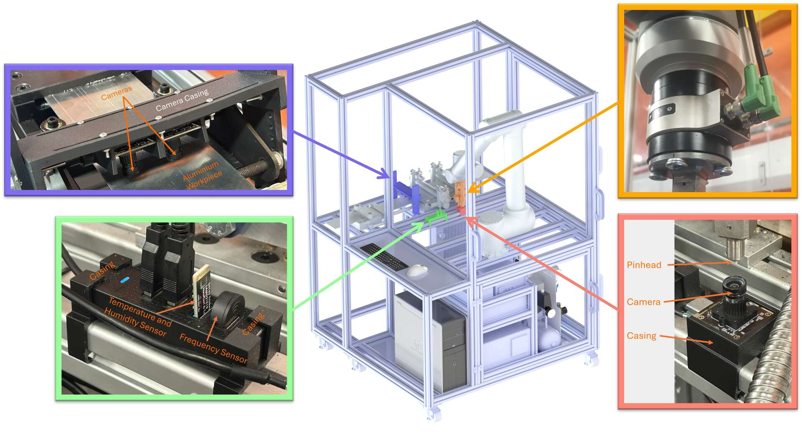

Automated ML-Based Assessment of Surface Damage in Metal Forming
(MEng FYP, Year-4). I automated data capture and control on the ULTRAMAN rig, building a multi-sensor workflow and computer-vision tooling for objective wear measurement. The page below outlines the sensors, optics and CV method, key signals, Machine Learning and cloud data flow.
Final Year Project poster
Sensors

Overview of the sensors used in the ULTRAMAN rig
The system records time-synchronised inputs: high-resolution images of the wear track and pin head; six-axis force data; and temperature and humidity measurements. All data use a common timestamp for reproducible analysis.
Optical Imaging
Wear-track imagingPin-head imaging
The system uses two calibrated imaging paths: a
wear-track camera and a pin-head camera. The wear-track camera captures high-resolution frames with a known mm-per-pixel scale to measure width growth and surface features across cycles.
The pin-head camera records build-up and wear flats on the tool and verifies the cleaning module’s effect. Using both views separates tool effects from track damage, supports reliable labelling, and helps interpret friction and tool wear trends.
Sensor Data and Computer Vision
Key Signals
Wear-track width vs cycles (Using computer vision)Temperature and humidity (Using environmental sensors)
Frequency diagnostic (Using environmental sensors)Coefficient of friction (Using load cell)
Sensors
Force: six-axis measurement; tared at run start; low-pass filtered at 5 Hz.
Friction: CoF (Coefficient of Friction) computed as lateral/normal force on the common timeline (μ = Fy/Fz).
Environment: temperature and humidity and acoustic frequency recorded with timestamps for each cycle.
Computer vision
Rectification → ROI crop → normalisation/denoise → edge detection → line/contour fit → px→mm conversion.
Outlier rejection and session-level calibration checks for unattended multi-cycle runs.
Machine Learning, Cloud and Data Management
Machine Learning architectureLocal to cloud pipeline
Machine Learning
TensorFlow (Python) models using features from synchronised sensor streams and CV-derived widths.
Versioned Parquet datasets with run-level metadata; train/val/test split by run to prevent leakage.
Class weighting and lightweight hyperparameter search; fixed seeds for reproducibility.
Models exported as TensorFlow SavedModel; inference scripts generate per-cycle predictions.
Cloud & Data
Local acquisition to batch/stream upload; images and tables stored alongside CV outputs.